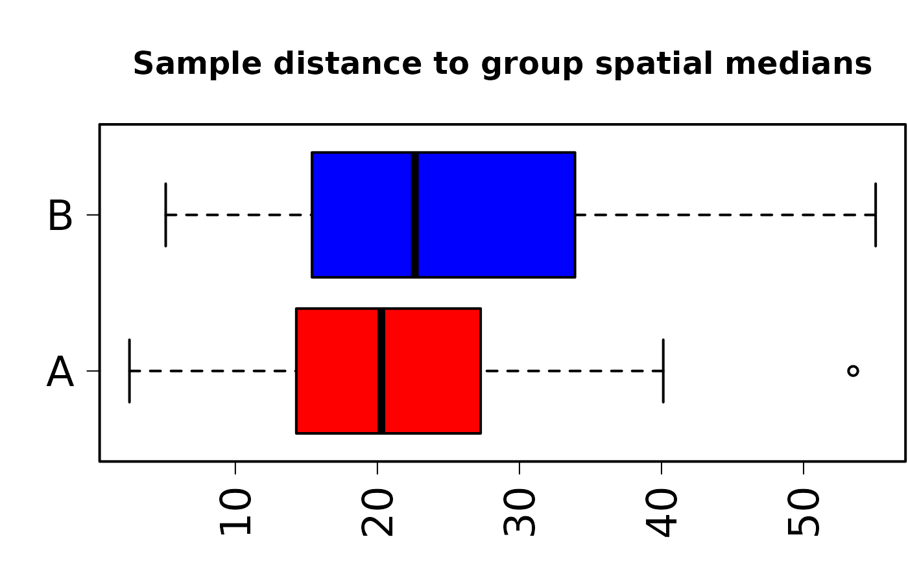

R/smart_permdisp.R
smart_permdisp.RdComputes Permutational Multivariate Analysis of Dispersion (PERMDISP) in group dispersion using multivariate data.
Variance partitioning computed on a sample-by-sample triangular matrix obtained from variable-by-sample data following Anderson (2006).
Calculates a range of inter-sample distances, similarities and dissimilarities. Includes control for genetic drift for bi-allelic genetic markers including single nucleotide polymorphisms (SNP) following Patterson, Price and Reich (2006) that can be combined with SMART Principal Component Analysis (PCA).
Optimized to run fast matrix building and permutations for big datasets in ecological, evolutionary and genomic research.
smart_permdisp(snp_data, packed_data = FALSE, sample_group, sample_remove =
FALSE, snp_remove = FALSE, missing_value = 9, missing_impute = "mean",
scaling = "drift", sample_distance = "euclidean", program_distance =
"Rfast", target_space = "multidimensional", pc_axes = 2, pairwise = FALSE,
pairwise_method = "holm", permutation_n = 9999, permutation_seed = 1,
dispersion_type = "median", samplesize_bias = FALSE)File name read from working directory. SNP = rows, samples = columns without row names or column headings.
SNP values must be count data (no decimals allowed).
File extension detected automatically whether text or EIGENSTRAT.
See details.
Logical value for EIGENSTRAT, irrelevant for text data.
Default packed_data = FALSE assumes uncompressed EIGENSTRAT.
packed_data = TRUE for compressed or binary EIGENSTRAT (PACKENDANCESTRYMAP).
Character or numeric vector assigning samples to groups. Coerced to factor.
Logical FALSE or numeric vector indicating column numbers (samples) to be removed from computations.
Default sample_remove = FALSE keeps all samples.
Logical FALSE or numeric vector indicating row numbers (SNPs) to be removed from computations.
Default snp_remove = FALSE keeps all SNPs.
See details.
Number 9 or string NA indicating missing value.
Default missing_value = 9 as in EIGENSTRAT.
If no missing values present, no effect on computation.
String handling missing values.
Default missing_impute = "mean" replaces missing values of each SNP by mean of non-missing values across samples.
missing_impute = "remove" removes SNPs with at least one missing value.
If no missing values present, no effect on computation.
String. Default scaling = "drift" scales SNPs to control for expected allele frequency dispersion caused by genetic drift (SMARTPCA). scaling = "center" for centering (covariance-based PCA). scaling = "sd" for centered SNPs divided by standard deviation (correlation-based PCA).
scaling = "none" for no scaling.
See details.
Type of inter-sample proximity computed (distance, similarity, dissimilarity).
Default is Euclidean distance.
See details.
A string value indicating R package to estimate proximities between pairs of samples.
Default program_distance = "Rfast" uses function Dist; program_distance = "vegan" uses vegdist.
See details.
String.
Default target_space = "multidimensional" applies PERMANOVA to sample-by-sample triangular matrix computed from variable-by-sample data, pc_axes has no effect on computation.
target_space = "pca" applies PERMANOVA to sample-by-sample data in PCA space, pc_axes determines number of PCA axes for testing.
Number of PCA axes computed always starting with PCA axis 1.
Default pc_axes = 2 computes PCA axes 1 and 2 if target_space = "pca".
No effect on computation if target_space = "multidimensional".
Logical.
Default pairwise = FALSE computes global test.
pairwise = TRUE computes global and pairwise tests.
String specifying type of correction for multiple testing.
Default "holm".
See details.
Number of permutations resulting in PERMDISP test p value.
Default 9999.
Number fixing random generator of permutations.
Default 1.
String indicating quantification of group dispersion whether relative to spatial "median" or "centroid".
Default "median". See details.
Logical.
samplesize_bias = TRUE for dispersion weighted by number of samples per group.
Default samplesize_bias = FALSE for no weighting.
See details.
Returns a list containing the following elements:
permdisp.samples: Dataframe showing sample summary. Column Group assigns samples to tested groups. Column Class specifies if samples were used in, or removed from, testing (PERMDISP). Column Sample_dispersion shows dispersion of individual samples relative to the spatial "median" or "centroid".
permdisp.bias: String indicating if PERMDISP dispersions were corrected for the number of samples per group.
permdisp.group_location: Dataframe showing coordinates of spatial "median" or "centroid" per group.
permdisp.global_test: List showing table with degrees of freedom, sum of squares, mean sum of squares, F statistic, and p value.
permdisp.pairwise_test: List showing table with F statistic, p value, and corrected p value per pair of groups. Obtained only if pairwise = TRUE.
permdisp.pairwise_correction: String indicating type of correction for multiple testing.
permdisp.permutation_number: Number of permutations applied to obtain the distribution of the F statistic.
permdisp.permutation_seed: Number fixing the random generator of permutations for reproducibility of results.
PERMDISP is a form of homoscedasticity test analogous to univariate Levene's (1960) and, more closely, Brown & Forsythe's (1974) tests. Applies PERMANOVA test (Anderson 2001) for differences in Euclidean dispersion among groups (Anderson 2006).
Proximity between samples can be any type of distance, similarity or dissimilarity.
Group dispersion estimated relative to group centroids (central point) or to spatial (geometric) medians (point minimizing distance to group samples) in Principal Coordinate Analysis (PCoA, Gower 1966) space.
Acronym PERMDISP originates from Marti Anderson's FORTRAN program (Anderson 2004).
Control for unequal number of samples among groups optionally done by weighting sample distance to group spatial median or centroid by sqrt(n/(n-1)) (O'Neill & Mathews 2000), and the null hypothesis then being tested changes from d_1 = d_2 = ... = d_t (balanced design) to ((n_1-1)/n_1) x d_1 = ((n_2-1)/n_2) x d_2 = ... = ((n_t-1)/n_t) x d_t (unbalanced design) where d represents dispersion of groups 1 to t, and n represents number of samples per group.
To attribute group differences to location (position of sample groups) and/or dispersion (spread of sample groups), PERMDISP must be combined with PERMANOVA as implemented through smart_permanova.
smart_permdisp uses betadisper to estimate an ANOVA F statistic and group dispersions using formula snp_eucli ~ sample_group, where snp_eucli is the sample-by-sample triangular matrix in PCoA space.
If >2 sample groups tested, pairwise = TRUE allows pairwise testing and correction for multiple testing by holm (Holm) [default], hochberg (Hochberg), hommel (Hommel), bonferroni (Bonferroni), BY (Benjamini-Yekuieli), BH (Benjamini-Hochberg) or fdr (False Discovery Rate).
For big data, Dist builds sample-by-sample triangular matrix much faster than vegdist. Dist computes proximities euclidean, manhattan, canberra1, canberra2, minimum, maximum, minkowski, bhattacharyya, hellinger, kullback_leibler and jensen_shannon. vegdist computes manhattan, euclidean, canberra, clark, bray, kulczynski, jaccard, gower, altGower, morisita, horn, mountford, raup, binomial, chao, cao and mahalanobis.
Euclidean distance required for SMARTPCA scaling.
sample_remove should include both samples removed from PCA and ancient samples projected onto PCA space (if any).
Data read from working directory with SNPs as rows and samples as columns. Two alternative formats: (1) text file of SNPs by samples (file extension and column separators recognized automatically) read using fread; or (2) duet of EIGENSTRAT files (see https://github.com/DReichLab/EIG) using vroom_fwf, including a genotype file of SNPs by samples *.geno, and a sample file (*.ind) containing three vectors assigning individual samples to unique user-predefined groups (populations), sexes (or other user-defined descriptor) and alphanumeric identifiers. For EIGENSTRAT, vector sample_group assigns samples to groups retrievable from column 3 of file *.ind.
SNPs with zero variance removed prior to SVD to optimize computation time and avoid undefined values if scaling = "sd" or "drift".
Users can select subsets of samples or SNPs by introducing a vector including column numbers for samples (sample_remove) and/or row numbers for SNPs (snp_remove) to be removed from computations.
Function stops if the final number of SNPs is 1 or 2.
EIGENSOFT was conceived for the analysis of human genes and its SMARTPCA suite so accepts 22 (autosomal) chromosomes by default.
If >22 chromosomes are provided and the internal parameter numchrom is not set to the target number chromosomes of interest, SMARTPCA automatically subsets chromosomes 1 to 22.
In contrast, smart_permdisp accepts any number of autosomes with or without the sex chromosomes from an EIGENSTRAT file.
Anderson, M. J. (2001) A new method for non-parametric multivariate analysis of variance. Austral Ecology, 26, 32-46.
Anderson, M. J. (2004). PERMANOVA_2factor: a FORTRAN computer program for permutational multivariate analysis of variance (for any two-factor ANOVA design) using permutation tests (Department of Statistics, University of Auckland, New Zealand).
Anderson, M. J. & D. C. I. Walsh (2013) PERMANOVA, ANOSIM, and the Mantel test in the face of heterogeneous dispersions: What null hypothesis are you testing? Ecological Monographs, 83, 557-574.
Gower, J. C. (1966) Some distance properties of latent root and vector methods used in multivariate analysis. Biometrika, 53, 325-338.
McArdle, B. H. & M. J. Anderson (2001) Fitting multivariate models to community data: a comment on distance-based redundancy analysis. Ecology, 82, 290-297.
Patterson, N., A. L. Price and D. Reich (2006) Population structure and eigenanalysis. PLoS Genetics, 2, e190.
Warton, D. I., S. T. Wright and Y. Wang (2012) Distance-based multivariate analyses confound location and dispersion effects. Methods in Ecology and Evolution, 3, 89-101.
# Path to example genotype matrix "dataSNP"
pathToGenoFile = system.file("extdata", "dataSNP", package = "smartsnp")
# Assign 50 samples to each of two groups and colours
my_groups <- as.factor(c(rep("A", 50), rep("B", 50))); cols = c("red", "blue")
# Run PERMDISP
permdispR <- smart_permdisp(snp_data = pathToGenoFile, sample_group = my_groups)
#> Checking argument options selected...
#> Argument options are correct...
#> Loading data...
#> Imported 10000 SNP by 100 sample genotype matrix
#> Time elapsed: 0h 0m 0s
#> Filtering data...
#> 10000 SNPs included in PERMDISP computation
#> 1 SNPs omitted from PCA computation
#> 100 samples included in PERMDISP computation
#> Completed data filtering
#> Time elapsed: 0h 0m 0s
#> Scanning for invariant SNPs...
#> Scan complete: no invariant SNPs found
#> Time elapsed: 0h 0m 0s
#> Checking for missing values...
#> 6341 SNPs contain missing values
#> Imputing mean for SNPs with missing values...
#> Imputation completed: 10058 missing values imputed
#> Time elapsed: 0h 0m 0s
#> Scaling values by SNP...
#> Centering and scaling by drift dispersion...
#> Completed scaling
#> Time elapsed: 0h 0m 0s
#> Construct triangular matrix of sample by sample proximities in multidimensional space...
#> Completed construction of triangular matrix of sample by sample proximities...
#> Compute inter- and intra-group dispersion by PERMDISP: global test...
#> Completed PERMDISP: global test based on group spatial medians
#> Time elapsed: 0h 0m 1s
#> Tabulating PERMDISP outputs...
#> Completed tabulations of PERMDISP outputs
# Extract summary table assigning samples to groups and dispersion of individual samples
permdispR$permdisp.samples
#> Group Class Sample_dispersion
#> 1 A PERMDISP 161.4757
#> 2 A PERMDISP 160.9709
#> 3 A PERMDISP 161.2118
#> 4 A PERMDISP 160.3491
#> 5 A PERMDISP 160.4445
#> 6 A PERMDISP 162.2998
#> 7 A PERMDISP 160.9662
#> 8 A PERMDISP 160.9234
#> 9 A PERMDISP 161.4040
#> 10 A PERMDISP 161.1902
#> 11 A PERMDISP 160.2838
#> 12 A PERMDISP 161.0910
#> 13 A PERMDISP 160.0616
#> 14 A PERMDISP 161.9953
#> 15 A PERMDISP 161.5489
#> 16 A PERMDISP 160.8466
#> 17 A PERMDISP 162.0203
#> 18 A PERMDISP 161.0723
#> 19 A PERMDISP 160.9892
#> 20 A PERMDISP 161.2393
#> 21 A PERMDISP 160.8561
#> 22 A PERMDISP 160.8314
#> 23 A PERMDISP 162.2363
#> 24 A PERMDISP 160.9487
#> 25 A PERMDISP 161.7043
#> 26 A PERMDISP 160.0128
#> 27 A PERMDISP 161.8192
#> 28 A PERMDISP 160.7234
#> 29 A PERMDISP 160.9490
#> 30 A PERMDISP 160.7225
#> 31 A PERMDISP 161.0558
#> 32 A PERMDISP 160.7245
#> 33 A PERMDISP 161.1502
#> 34 A PERMDISP 159.9254
#> 35 A PERMDISP 161.1662
#> 36 A PERMDISP 161.3988
#> 37 A PERMDISP 161.6969
#> 38 A PERMDISP 160.5360
#> 39 A PERMDISP 161.5771
#> 40 A PERMDISP 161.1907
#> 41 A PERMDISP 161.8498
#> 42 A PERMDISP 161.7793
#> 43 A PERMDISP 161.9005
#> 44 A PERMDISP 161.7850
#> 45 A PERMDISP 161.7027
#> 46 A PERMDISP 161.9930
#> 47 A PERMDISP 162.2773
#> 48 A PERMDISP 160.8876
#> 49 A PERMDISP 161.3201
#> 50 A PERMDISP 162.0835
#> 51 B PERMDISP 161.9058
#> 52 B PERMDISP 161.5106
#> 53 B PERMDISP 160.9970
#> 54 B PERMDISP 160.9550
#> 55 B PERMDISP 160.9942
#> 56 B PERMDISP 162.4287
#> 57 B PERMDISP 161.0528
#> 58 B PERMDISP 161.0653
#> 59 B PERMDISP 160.5475
#> 60 B PERMDISP 161.4787
#> 61 B PERMDISP 161.8445
#> 62 B PERMDISP 161.1317
#> 63 B PERMDISP 161.3229
#> 64 B PERMDISP 162.3351
#> 65 B PERMDISP 160.9433
#> 66 B PERMDISP 161.8845
#> 67 B PERMDISP 160.6879
#> 68 B PERMDISP 160.8744
#> 69 B PERMDISP 163.0843
#> 70 B PERMDISP 160.7723
#> 71 B PERMDISP 160.9731
#> 72 B PERMDISP 161.2441
#> 73 B PERMDISP 162.3827
#> 74 B PERMDISP 161.2757
#> 75 B PERMDISP 161.6916
#> 76 B PERMDISP 161.3637
#> 77 B PERMDISP 160.7243
#> 78 B PERMDISP 162.8925
#> 79 B PERMDISP 160.8015
#> 80 B PERMDISP 161.7590
#> 81 B PERMDISP 161.8004
#> 82 B PERMDISP 161.1778
#> 83 B PERMDISP 161.3634
#> 84 B PERMDISP 161.4223
#> 85 B PERMDISP 162.5199
#> 86 B PERMDISP 161.3039
#> 87 B PERMDISP 161.4728
#> 88 B PERMDISP 160.7768
#> 89 B PERMDISP 161.7114
#> 90 B PERMDISP 162.3565
#> 91 B PERMDISP 161.3105
#> 92 B PERMDISP 161.0042
#> 93 B PERMDISP 161.4582
#> 94 B PERMDISP 161.9629
#> 95 B PERMDISP 161.2433
#> 96 B PERMDISP 161.8619
#> 97 B PERMDISP 160.9686
#> 98 B PERMDISP 161.7675
#> 99 B PERMDISP 161.2074
#> 100 B PERMDISP 160.5961
# Extract PERMDISP table
permdispR$permdisp.global_test
#> Df Sum Sq Mean Sq F Pr(>F)
#> Groups 1 1.214908 1.2149079 3.387661 0.0642
#> Residuals 98 35.145482 0.3586274 NA NA
# Plot sample distances to group central medians
#run pca with truncated SVD (PCA 1 x PCA 2)
pcaR1 <- smart_pca(snp_data = pathToGenoFile, sample_group = my_groups)
#> Checking argument options selected...
#> Argument options are correct...
#> Loading data...
#> Imported 10000 SNP by 100 sample genotype matrix
#> Time elapsed: 0h 0m 0s
#> Filtering data...
#> No samples projected after PCA computation
#> 10000 SNPs included in PCA computation
#> 100 samples included in PCA computation
#> Completed data filtering
#> Time elapsed: 0h 0m 0s
#> Scanning for invariant SNPs...
#> Scan complete: no invariant SNPs found
#> Time elapsed: 0h 0m 0s
#> Checking for missing values...
#> 6341 SNPs contain missing values
#> Imputing SNPs with missing values...
#> Imputation with means completed: 10058 missing values imputed
#> Time elapsed: 0h 0m 0s
#> Scaling values by SNP...
#> Centering and scaling by drift dispersion...
#> Completed scaling using drift
#> Time elapsed: 0h 0m 0s
#> Computing singular value decomposition using RSpectra...
#> Completed singular value decomposition using RSpectra
#> Time elapsed: 0h 0m 1s
#> Extracting eigenvalues and eigenvectors...
#> Eigenvalues and eigenvectors extracted
#> Time elapsed: 0h 0m 1s
#> Tabulating PCA outputs...
#> Completed tabulations of PCA outputs...
#compute Euclidean inter-sample distances in PCA space (triangular matrix)
snp_eucli <- vegan::vegdist(pcaR1$pca.sample_coordinates[,c("PC1","PC2")], method = "euclidean")
#calculate spatial medians
disMed <- vegan::betadisper(d = snp_eucli, group = my_groups); disMed
#>
#> Homogeneity of multivariate dispersions
#>
#> Call: vegan::betadisper(d = snp_eucli, group = my_groups)
#>
#> No. of Positive Eigenvalues: 2
#> No. of Negative Eigenvalues: 0
#>
#> Average distance to median:
#> A B
#> 21.38 23.66
#>
#> Eigenvalues for PCoA axes:
#> PCoA1 PCoA2
#> 31798 31460
#plot
oldpar <- par(mar = c(4, 4, 5, 0.1), lwd = 2)
boxplot(disMed, las =2, cex.axis = 2, cex.main = 1.5, horizontal = TRUE, varwidth = TRUE,
col = cols, xlab = "", ylab = "", main = "Sample distance to group spatial medians")

par(oldpar)